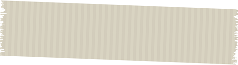
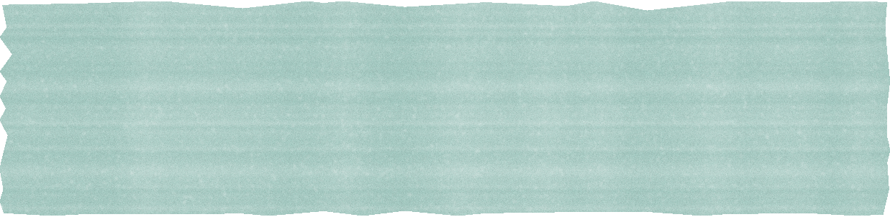

@fairhealth.br01/08
Saúde mental no trabalho
546,2
mil
afastamentos do trabalho

por saúde mental
no Brasil em 2025, concedidos pelo INSS.
Fonte: Ministério da Previdência Social
E agora, RH?
Arraste para o lado →
Saúde mental no trabalho
546,2
mil
afastamentos do trabalho
por saúde mental
no Brasil em 2025, concedidos pelo INSS.
Fonte: Ministério da Previdência Social
E agora, RH?
Arraste para o lado →

O que a NR-01 pede
e por que a planilha
sozinha não resolve.
Inventário de riscos · PGR
Risco psicossocial
Status
Sobrecarga
Metas sem clareza
Falta de apoio
Conflitos e assédio
Jornada sem pausa
Mapeado
Mapeado
Mapeado
Mapeado
Mapeado

O dado
546,2 mil licenças por
transtornos mentais em 2025,
o segundo recorde seguido.

472,3 mil
licenças

546,2 mil
licenças
2024
2025
+15,7%
Fonte: Ministério da Previdência Social (nota oficial, jan/2026). Benefícios por incapacidade temporária concedidos pelo INSS por transtornos mentais e comportamentais: 472.328 em 2024 e 546.254 em 2025.

A norma
NR-01
Desde maio de 2026, a NR-01 pede que a empresa identifique e gerencie os riscos psicossociais, junto com os outros riscos ocupacionais.

Fonte: NR-01, Ministério do Trabalho e Emprego. Item 1.5.3.1.4 na redação da Portaria MTE nº 1.419/2024; vigência adiada para maio de 2026 pela Portaria MTE nº 765/2025.
O que é
risco psicossocial
Sobrecarga
Metas sem clareza
Falta de apoio
Conflitos e assédio
Jornada sem pausa

Mapear o risco
é o começo.
Reduzir o risco pede

gente perto:
01
02
03
Escuta
Acompanhamento
Encaminhamento
Três perguntas para
a próxima reunião de RH

Onde a sobrecarga aparece primeiro?
A quem o colaborador recorre quando não está bem?
Que indicador mostra se melhorou?

E agora, RH?

Comente

CUIDADO
e receba o guia de NR-01.
Precisa de ajuda agora? CVV 188.